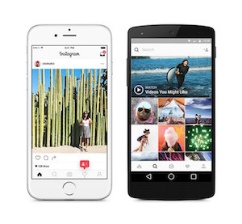

The User Interface of Instagram has been renowned for its minimalistic and clean features. Instagram team could have added more features, but they purposely restricted their features. They have a few icons that users can play with. One of most interesting icon is a paper airplane. It allows users to send or share any contents directly to other users. These simple,yet essential features attracted users successfully and now Instagram has tons of users.